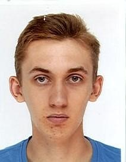
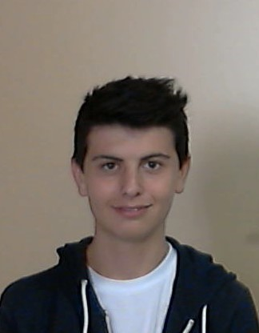

L’entreprise Transport My Mind fut créée en 2010 à la suite de l’évolution rapide des technologies dans ce domaine. A sa tête, un homme dynamique Michael Laconte. Il mit sur pied de nouveaux projets tout droit sorti de son imagination d’enfant rêveur. Il créa sa start-up avec quelques amis. Entre autres, nous citons Albert Cortona, un grand ingénieur diplômé de l’école d’ingénieur ISEN Bretagne. L’école la plus renommée en question d’ingénieur dans les transports.
Pour commencer, il dût s’accrocher à son rêve et fit le tour de toutes les entreprises de France. Avec une grande envie de réussir, il tenta de convaincre un communicant, un financier, un commercial, un analytique.
Son équipe au complet, il décide de se rendre en Californie pour convaincre des entrepreneurs. Il rencontra le patron de Nvidia, puis Intel et Google. Sans oublier l’entreprise allemande BMW qui lui offre son aide ainsi de l’entreprise japonaise Kawasaki.
“Et si le futur c'était le présent ?” annonça Michael Laconte à l’ouverture de sa start-up. Alors que certains se moquent de son imagination débordante, il décide de réinventer le monde des transports. Fan de moto depuis tout petit, son premier projet était de créer une moto totalement électrique, et écologique. Puis s’en suivit en 2013 des dizaines de projets de nouvelles motos et voitures électriques.
C’est en 2016, alors que personne ne s’y attendait, il sortit 4 bijoux de technologies. Électriques, écologiques mais surtout futuristes ! Il l’avait promis et il l’a fait. Tous les fans de science-fiction restent sans voix. Des voitures autonomes, des motos convertibles, des trains plus rapides que des avions, ou encore des transports en communs futuristes, non vous ne rêvez pas. Il a réinventé le présent.
Si le futur n’est pas dans le présent, je ne saurai vous dire où il se trouve...
Interview de Michael Laconte :

“J’ai voulu créer une start-up à mon image, un grand enfant qui rêve du futur. Dans mon entreprise, nous nous concentrons sur la réalisation de nouveaux moyens de transport. En 2011, nous étions
seulement 6, dont mon vieil ami Albert Cortona. On était tous dans le même local, mon garage. Il y avait un communicant, un financier, un commercial, un analytique et un ingénieur en transport. Maintenant nous sommes 41, nous avons de magnifiques
locaux situés sur le port de Brest. Un endroit merveilleux, nous avons vu sur mer. D’ailleurs, nous pensons nous développer dans le secteur maritime. Nous sommes d’ailleurs en contact avec STX, les chantiers de Saint-Nazaire.”
|

Michael Laconte Directeur laconte.m@transportmm.fr 02.98.30.20.10 |
Albert Cortona Ingénieur en transport cortona.a@transportmm.fr 06.01.88.02.97 |
|---|---|
|
Maurice Fortier Communicant fortier.m@transportmm.fr 06.53.85.35.77 |
Archaimbau Lépicier Financier lepicier.a@transportmm.fr 06.36.41.79.11 |
|
Lucas Vincent Commercial Europe/Asie/Afrique vincent.l@transportmm.fr 06.10.02.54.61 |

Peppin Allard Commercial Amérique/Pacifique allard.p@transportmm.fr 06.68.62.39.33 |
|
Allyriane Rocher Secrétaire rocher.a@transportmm.fr 06.23.94.72.86 |

Leana Bisson Analytique bisson.l@transportmm.fr 06.97.17.74.24 |
|
Dorothée Gabriaux Technicienne support gabriaux.d@transportmm.fr 06.17.64.26.55 |
Pauline Josse Consultante josse.p@transportmm.fr 06.01.64.04.80 |